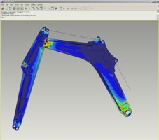

|
 Pro/ENGINEER
Structural and Thermal Simulation; fiziksel prototip hazýrlamaksýzýn,
ürün performansýnýzý dijital ortamda analiz etmenizi ve anlamanýzý
saðlar. Bu sayede; tasarým mühendisleri, tasarým/dizayn safhasýnýn
erken evrelerinde ürünün davranýþýný gözlemleyere gerekli
düzeltmeleri yapabilirler. Daha baþlangýç safhasýnda saðlanan
bu optimizasyon sayesinde, istenen tasarýma daha az para ve
zaman harcanarak ulaþýlmýþ olur. Pro/ENGINEER
Structural and Thermal Simulation; fiziksel prototip hazýrlamaksýzýn,
ürün performansýnýzý dijital ortamda analiz etmenizi ve anlamanýzý
saðlar. Bu sayede; tasarým mühendisleri, tasarým/dizayn safhasýnýn
erken evrelerinde ürünün davranýþýný gözlemleyere gerekli
düzeltmeleri yapabilirler. Daha baþlangýç safhasýnda saðlanan
bu optimizasyon sayesinde, istenen tasarýma daha az para ve
zaman harcanarak ulaþýlmýþ olur.
Günümüzdeki
pazar koþullarýnda yaþanan rekabet, tasarýmcýlarý ve üreticileri
"ilk seferde doðru tasarýmý yapma" konusunda zorlamaktadýr.
Bu amaca ulaþmak için, tasarýmcýlarýn ürün performansýný tasarým
sürecinin baþlangýç evresinde görmeleri gerekmektedir. En
az denemede en doðru sonuca ulaþmak için fiziksel prototiplerin
hazýrlanýp bunlarýn testlerinin yolaçtýðý zaman ve para kaybý
yerine, dijital ortamda modellerin hazýrlanmasý ve çalýþma
þartlarýnýn uygulandýðý simulasyonlarý kullanmak çok daha
uygundur. Bu sayede, modellerde istenilen modifikasyonlar
dijital ortamda yapýlarak, istenildiði kadar detaylý testler
uygulanabilir. Son þeklini alan modelin, fiziksel prototipleri
hazýrlanýp testler gerçekleþtirildiðinde ise, istenilen amaca
çok daha kýsa bir sürede ve düþük maliyetle ulaþýlmýþ olur.
Pro/ENGINEER
Structural and Thermal Simulation, entegre bir çözüm olmasý
sebebiyle herhangi bir data dönüþümüne ihtiyaç duymaz. Yani,
tasarladýðýnýz parçalarý ya da montajlarý yine Pro/ENGINEER
içinde ve ayný grafik ekranda analiz edebilir ve tasarýmlarýnýzýn
uygulamýþ olduðunuz sýnýr þartlarýnda nasýl bir davranýþ sergilediðini
rahatlýkla gözlemleyebilirsiniz. Model üzerinde yapmýþ olduðunuz
modifikasyon sonrasýnda, sadece yeni bir analiz çözerek tasarýmýnýzýn
modifikasyondan önceki ve sonraki durumunu karþýlaþtýrabilirsiniz.
Ayrýca, sizin için kritik olduðunu düþündüðünüz bölümlerin,
deðiþik durumlar için nasýl davranacaðýný ve elde ettiðiniz
sonuçlarýn deðiþimini gözlemleyebilirsiniz.
Sonuç
olarak; mühendisler tasarýmlarýný Pro/ENGINEER, Structural
and Thermal Simulation ile dijital ortamda geliþtirebilir;
daha ucuza daha kaliteli ürünleri daha kýsa sürede piyasaya
sunabilirler.
Unsurlar
ve Özellikleri
Dizayn
Ýhtiyaçlarýnýzý Karþýlamanýz Ýçin Geniþ Analiz Yelpazesi
- Statik
durum için gerilme ve deplasman analizi
- Doðal
frekanslarýn bulunmasý
- Burkulma
analizi
- Sýcaklýk
ve sýcaklýk akýþýnýn gözlemlenmesi için düzenli hal sýcaklýk
analizi
Ýleri
Düzey Ýhtiyaçlarýnýz Ýçin Sofistike Analizler
-
Geçici durum sýcaklýk analizi
- Ön
gerilmeli statik ve titreþim analizi
- Dinamik
zaman, frekans, þok ve rastgele tireþim analizi
- Anisotropic
ve orthotropic malzemeler
- Sýcaklýkla
özellikleri deðiþen malzemeler
Sýcaklýk
Analizleri
-
Isý yüklerinin uygulanmasý, sýcaklýklarýn girilmesi ve termal
modeller için konveksiyon katsayýlarýnýn girilmesi
- CFD
(Hesaplamalý akýþkanlar dinamiði) analizlerinden alýnmýþ
termal sýnýr koþullarýn uygulanmasý
- Isýl
gerilmelerin hesaplanmasý için ýsýl analiz sonuçlarýnýn
yapýsal modellerde kullanýlmasý
Elde
Edilen Sonuçlarýn Ýncelenmesi Ýçin Çeþitli Araçlar
-
Model üzerinde interaktif olarak sonuçlarý gözlemleme (Dynamic
Query)
- Sonuçlarýnýzý
MPEG, VRML, JPEG, EXCEL, TIFF ve HTML raporu formatlarýnda
alabilirsiniz.
- Modelinizin
iç kýsýmlarýndaki sonuçlarý gözlemlemek için çeþitli araçlar
mevcuttur.
- Analizlerden
elde ettiðiniz sonuçlarý þablonlar hazýrlayarak standart
halde otomatik olarak alabilirsiniz.
Dizaynlarýnýzý
Geliþtirmek ve Optimize Etmek Ýçin Araçlar
- Optimizasyon
ve fizibilite çalýþmalarý ile yapmýþ olduðunuz dizayný geliþtirebilirsiniz.
- Hassasiyet
arttýrma çalýþmalarý ile tasarýmýnýzý deðiþik senaryolar
için test etme imkaný bulabilirsiniz.
Daha
fazla bilgi için: www.ptc.com/...
Pro/ENGINEER » CAE » Structural, Thermal, Motion » Pro/ENGINEER
Structural and Thermal
Ýrtibat:
Gökhan
Asil
PLM Proje ve Uygulama Mühendisi
INFOMA GROUP
Informatik - InFomaDesign - SmartMeter - Arsay
Famas Plaza A-Blok Kat:3 Darülaceze Cad.
H.Z. Türkkan Sok.
Þiþli Ýstanbul
Tel: (212) 222 3235
www.infoma.biz
ÝNFOMA
GROUP Ýnformatik Bilgisayar Sistemleri Tic. ve San. A.Þ. Hakkýnda:
1988
yýlýnda kurulan ve bir INFOMA GROUP þirketi olan Ýnformatik,
"Üreten Türkiye için Teknoloji Temini" sloganý ile
sanayide "özgün tasarým ve özgün imalatýn" gerçekleþebilmesi,
Türk Sanayiinin rekabetçi bir yapýya kavuþmasý amacý ile,
üreticilere AR-GE altyapýlarýnda kullanabilecekleri ve verimliliklerini
arttýran ileri teknoloji çözümleri sunmaktadýr. Bunlar, kýsa
kýsa adý CAD/CAM/CAE (PLM-Product Lifecycle Managment/Ürün
Geliþtirme Yönetimi) olan ve imalata yönelik teknolojilerin
yaný sýra kýsa adý AEC/GIS olan inþaat ve harita konularýna
yönelik sayýsal harita üretimi, konstrüksiyon ve uzaktan algýlama
konularýdýr. Bu konularda, Informatik yaklaþýk 17 yýldýr PTC,
BOEING, PCI gibi dünyanýn tanýnmýþ ve kendini kanýtlamýþ lider
firmalarýný baþarý ile temsil etmektedir. Ýnformatik, bu sektörün
Türkiye'de kurulmasý ve yapýlanmasýnda ilk olmanýn bilinci
ile öncü rol oynamýþ ve hala kendi sektörünün lideri ve PTC
Pro/ENGINEER Türkiye Temsilcisi olarak, sanayinin ilk 500
firmasý ve KOBÝ'lere hizmet sunmaktadýr.
Parametric
Technology Corporation (PTC) Hakkýnda:
PTC
(Nasdaq: PMTC), 1985 yýlýnda Needham, MA/Amerika'da kurulmuþ
olup Dünya'da 35,000 den fazla müþterisi ile Ürün Geliþtirme
Yönetimi (PLM) yazýlým çözümleri konusunda sektörde liderlik
yapmaktadýr. PTC müþterilerinin coðunluðunu; Savunma, Uzay,
Uçak, Otomotiv, Tüketici Elektroniði, Yüksek Teknoloji, Sanayi
Ekipmanlarý ve Týbbi Cihazlar alanýndaki dünyanýn en önde
gelen üretici firmalarý oluþturur.
PTC,
pazarda ürün geliþtirme sürecinde konsept'ten nihai ürüne
kadar tüm aþamalarda en kapsamlý yazýlým çözümleri sunmaktadýr.
Üreticiler, dijital ortamda ürün tasarýmý yaný sýra tasarýmlarý
kurum içinde departmanlar arasýnda ve dýþýnda tedarikçiler,
müþteriler ve iþ ortaklarý arasýnda koordineli bir þekilde
geliþtirerek ürün geliþtirme sürecinde maximum verimlilik
saðlarr: www.ptc.com
|